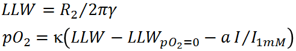

| EPR Imaging Toolbox collection user manual |
epr_R2_PO2 Convert relaxation rate to oxygen concentration. Syntax: pO2 = epr_R2_PO2(R2) pO2 = epr_R2_PO2(R2, Amp, mask, probe_info) Description: Converts relaxation time to oxygen concentration for the given parameters.  γ is the gyromagnetic ratio of electron, 2.802 MHz/G. Other parameters are described below. R2 - matrix of relaxation times R2 (float, x106s-1) Amp - matrix of spin probe concentration I (float, a.u.) probe_info - (structure) of spin probe parameters ~.LLW_zero_po2 - Lorentzian line width LLWpO2=0 at 0 torr (float, mG, default is 10.2) ~.Torr_per_mGauss - proportionality coefficient κ (float, torr/mG, default is 1.84) ~.mG_per_mM - self broadening coefficient a (float, mG/mM, default is 0) ~.MDNmG_per_mM - self broadening coefficient for median spin-probe concentration (float, mG/mM, default is 0) ~.amp1mM - intensity I1mM corresponding to 1 mM (float, a.u.) mask - mask to select values for conversion, use true(size(T2)) to select all (boolean) pO2 - matrix of oxygen concentrations (float, torr) size(R2)=size(Amp)=size(mask)=size(pO2) Example: R2 = 0.25; % [us] sprintf('%4.1f torr',epr_R2_PO2(R2)) Legend: EPR-IT functions; MATLAB functions; comments. |